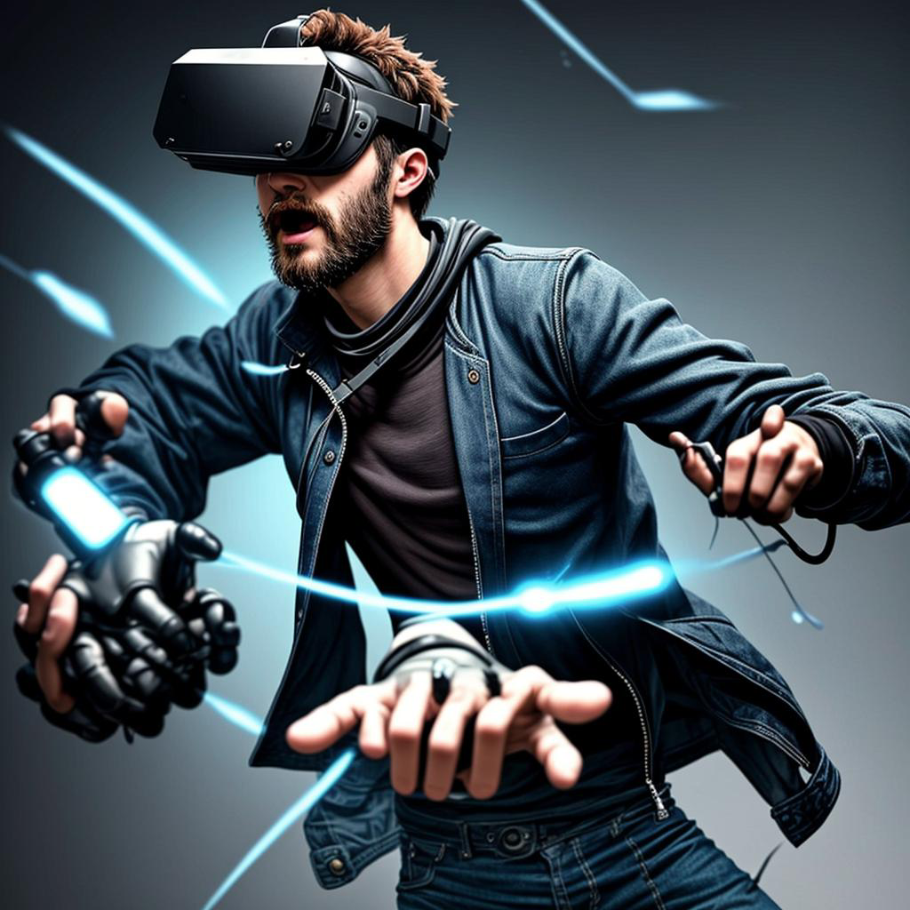
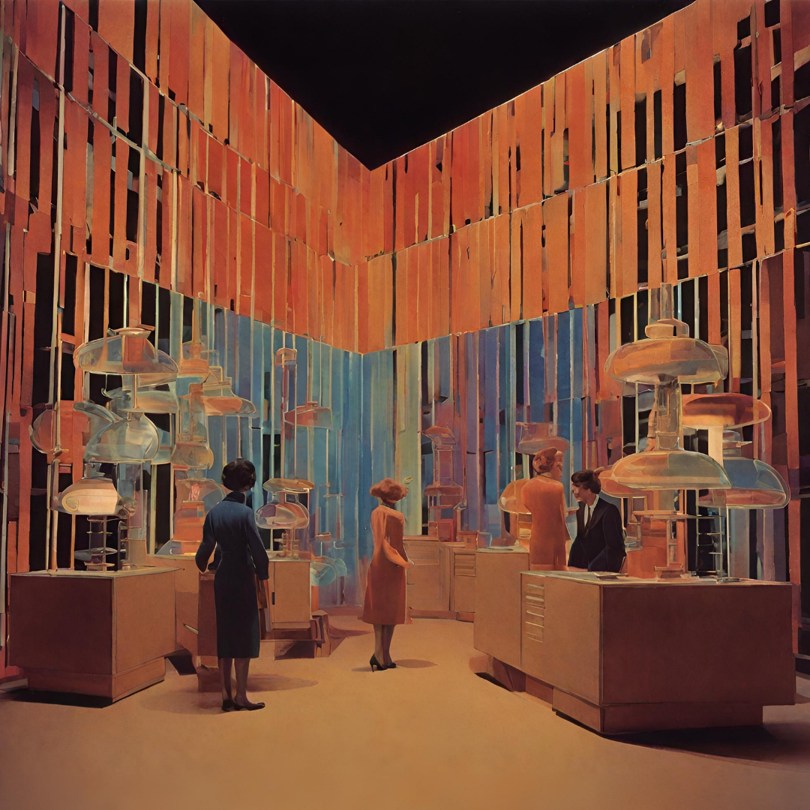
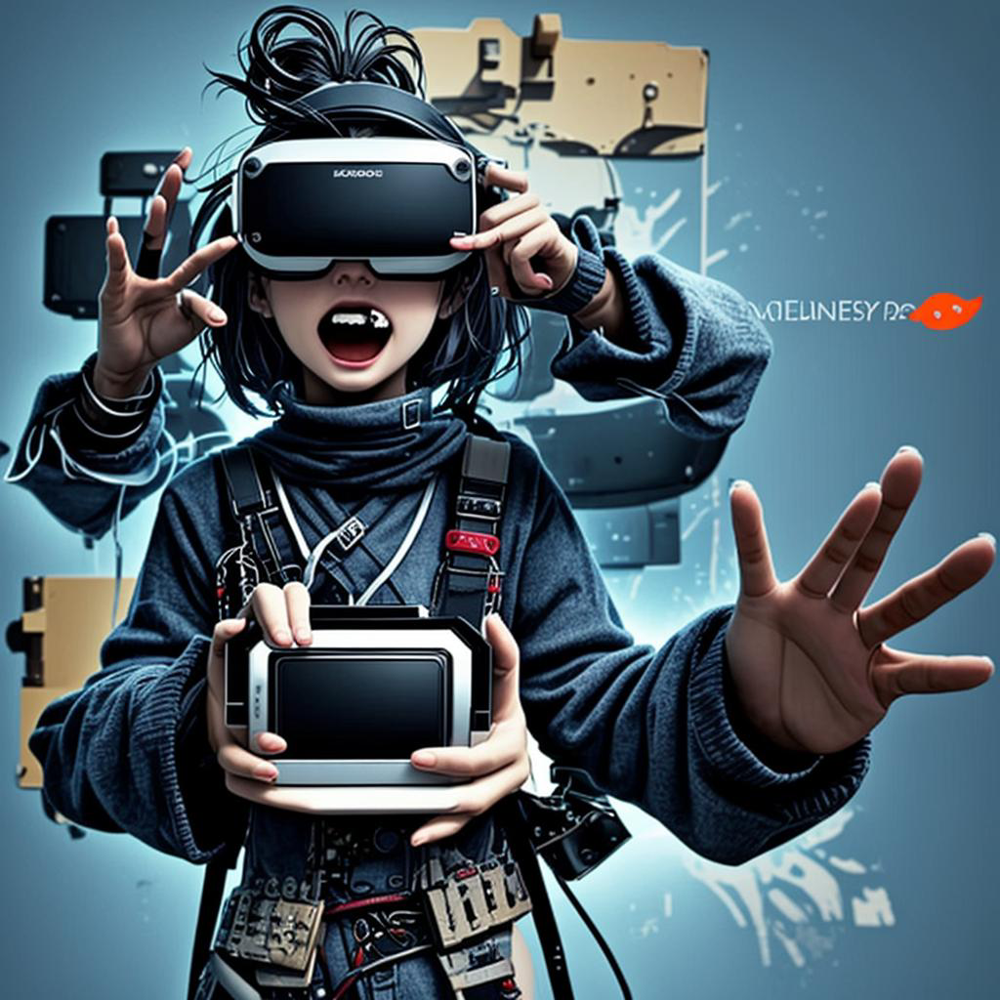
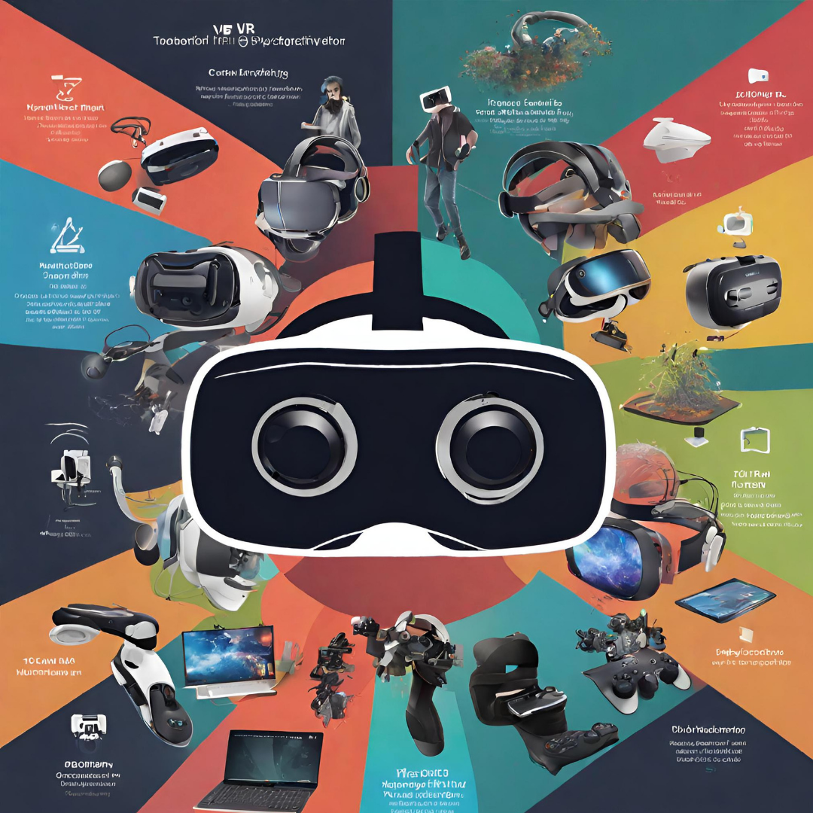
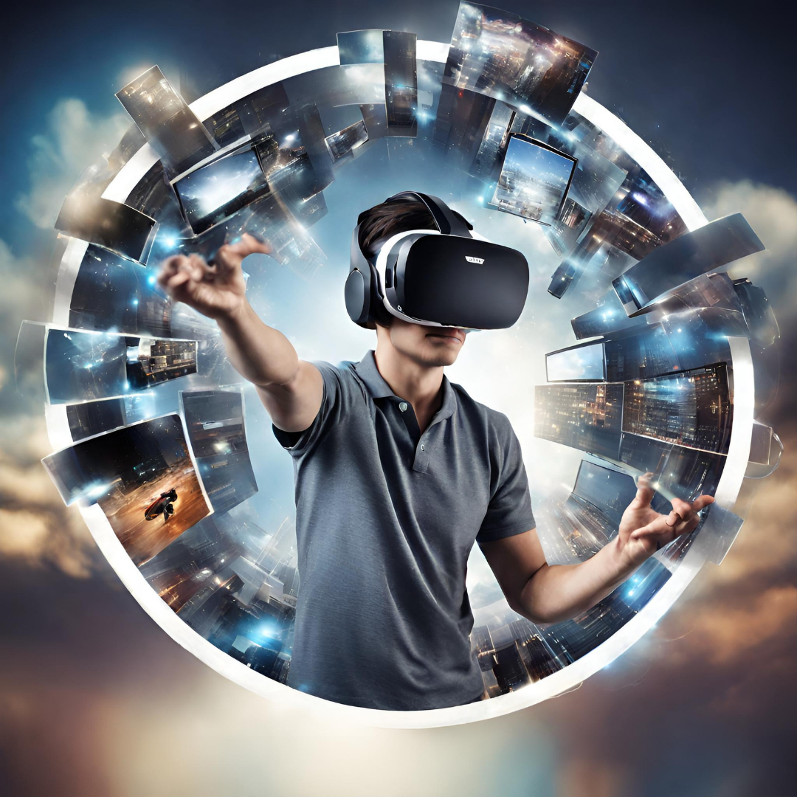

The Evolution of Virtual Reality: From Sci-Fi Dreams to Everyday Reality
In our digital age, Virtual Reality (VR) isn't just tech jargon; it's a cool way to step into virtual worlds that feel real. Imagine putting on special glasses, and suddenly you're not just playing a game—you're inside it!

You can explore ancient places, go on thrilling adventures, or even travel to outer space, all while sitting in your living room. VR isn't just for fun; it's like a magic door to places you've only dreamed of.
But how did we get here? VR started as a dream in sci-fi stories and has become a real thing you can use. It's not just for gamers; it's helping doctors practice surgeries, letting students go on virtual field trips, and much more.
So, buckle up for a trip into the world of Virtual Reality, where what you can imagine becomes something you can actually do. It's not just a peek into the future; it's like having a superpower that lets you go anywhere and do anything—right from your own space. Welcome to the awesome world of Virtual Reality!
Historical Overview
The early developments in VR trace back to the 1960s, with the creation of the Sensorama by Morton Heilig in 1962. This immersive device provided a multi-sensory experience using stereoscopic 3D visuals, sound, and even aromas. In 1968, Ivan Sutherland and his student, Thomas Furness, developed the first head-mounted display (HMD) called the "Sword of Damocles," laying the groundwork for wearable VR.

The 1980s saw advancements with Jaron Lanier coining the term "virtual reality" and introducing the DataGlove and EyePhone. SEGA's VR-1 motion simulator in the early '90s marked a notable milestone, but VR faced setbacks due to technological limitations and high costs.

The breakthroughs in the 2010s were transformative. Oculus Rift, introduced in 2012, rekindled interest, and its acquisition by Facebook in 2014 fueled further development. Valve and HTC collaborated on the Vive in 2016, incorporating room-scale tracking. PlayStation VR brought VR to mainstream gaming.
Applications Across Industries

Gaming and Entertainment
Oculus Rift and other VR gaming platforms have transformed the gaming experience by providing immersive environments. Games like "Beat Saber" and "Half-Life: Alyx" showcase the potential of VR in gaming.
Healthcare
VR is used for surgical training, allowing medical professionals to practice procedures in a risk-free environment. Touch Surgery offers a platform for surgeons to refine their skills through realistic simulations.
Technological Advancements

Hardware Advancements: Shrinking components, higher resolution displays, and faster processors have made VR headsets more compact, powerful, and comfortable.
Graphics Enhancement: Evolving GPU capabilities enable realistic visuals, higher frame rates, and reduced latency, enhancing the overall immersive experience in virtual environments.
User Interface Innovations: Intuitive controllers, hand-tracking, and haptic feedback contribute to more natural interactions, making VR more accessible and user-friendly.